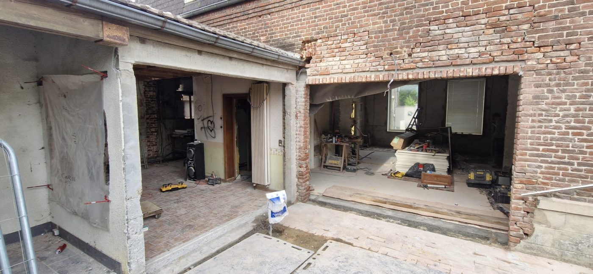
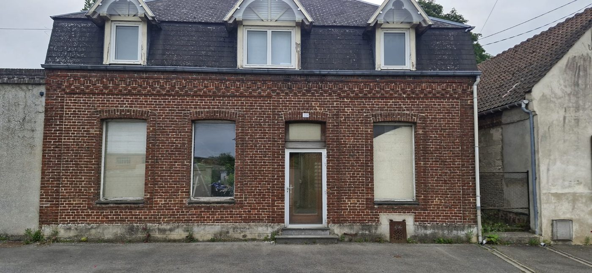
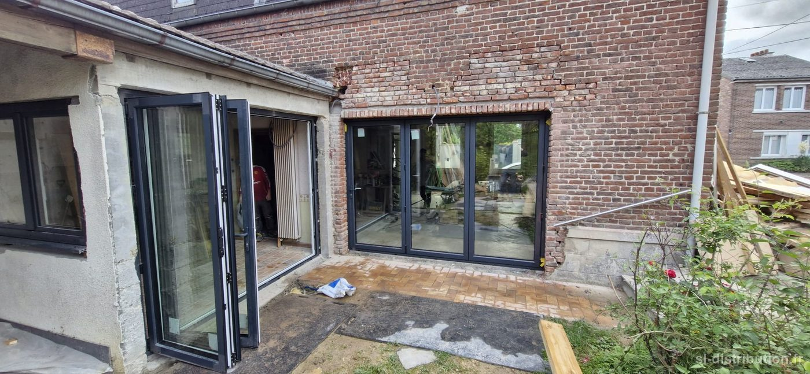

- Commune — Cambrésis
- Chantier — Rénovation, deux portes accordéon aluminium
- Année — 2026
Les propriétaires voulaient un arrière de maison complètement ouvert. Avec une coulissante, il reste toujours un vantail devant l'ouverture ; en accordéon, tout se replie sur le côté et le mur s'efface.
Les ouvertures ont été créées dans la maçonnerie existante, puis équipées de deux portes en accordéon aluminium à trois vantaux, ouvrant vers l'extérieur et se repliant intégralement sur le côté. Triple vitrage, finition gris anthracite structuré à l'extérieur, blanc à l'intérieur. L'aluminium était le bon choix ici : à cette largeur, il tient la charge avec des montants fins, ce qui laisse la vue au jardin plutôt qu'au cadre.
La difficulté n'était pas la menuiserie, c'était de caler les cotes avec le gros œuvre. Des ouvertures à créer dans un mur ancien, des rehausses prévues en haut et sur les côtés, une reprise de finition après maçonnerie. Sur ce type de projet, une erreur de deux centimètres ne se rattrape pas en atelier.



